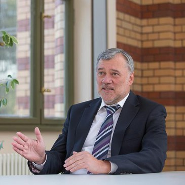
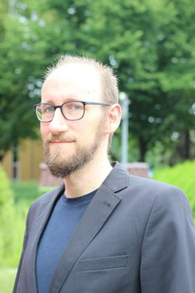
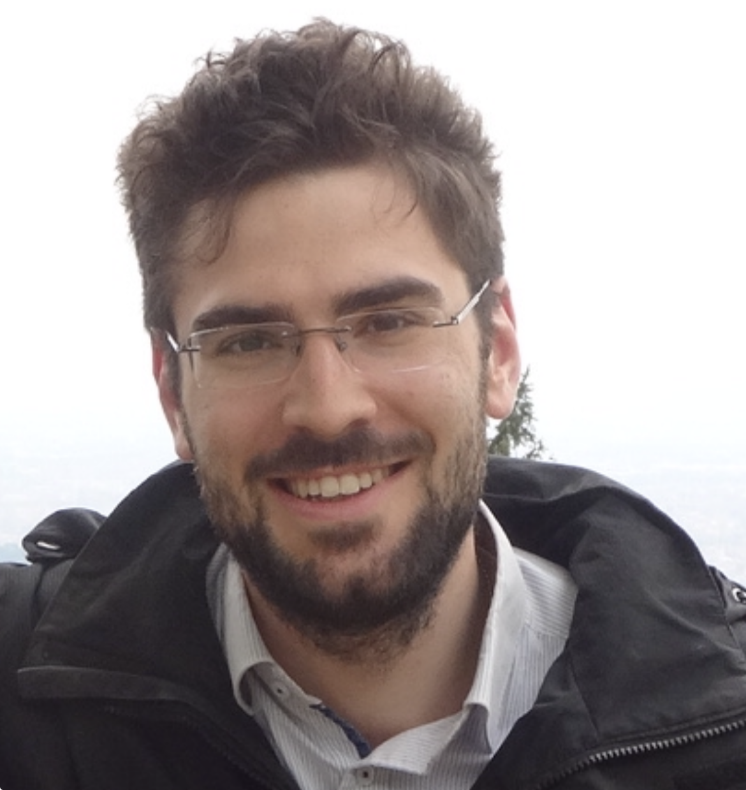
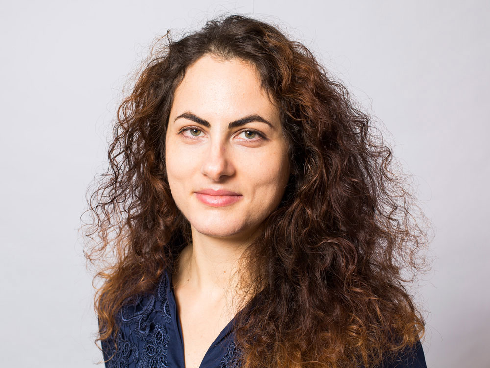
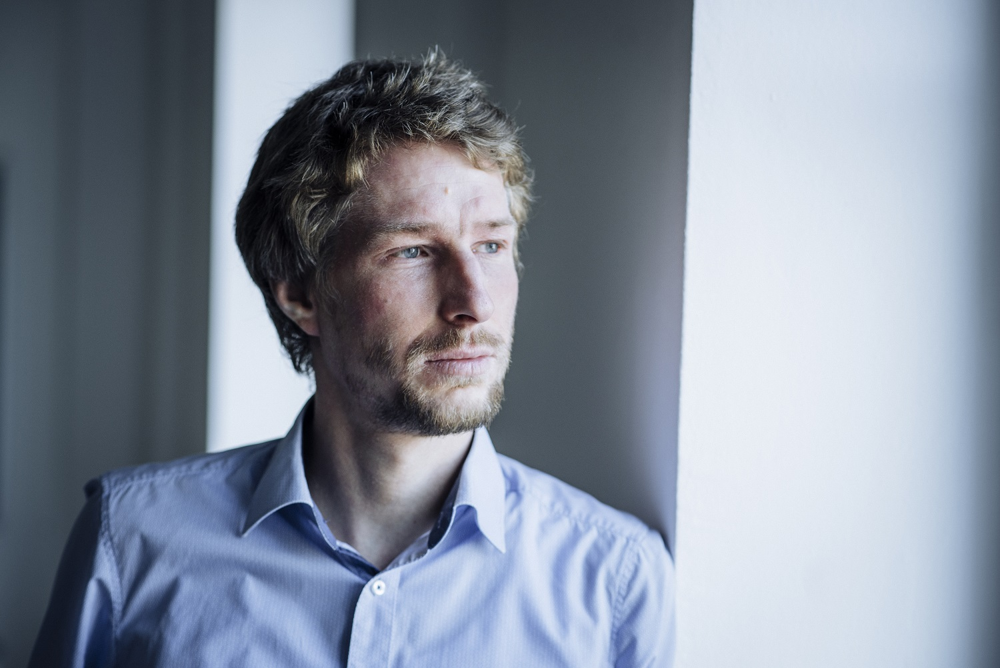
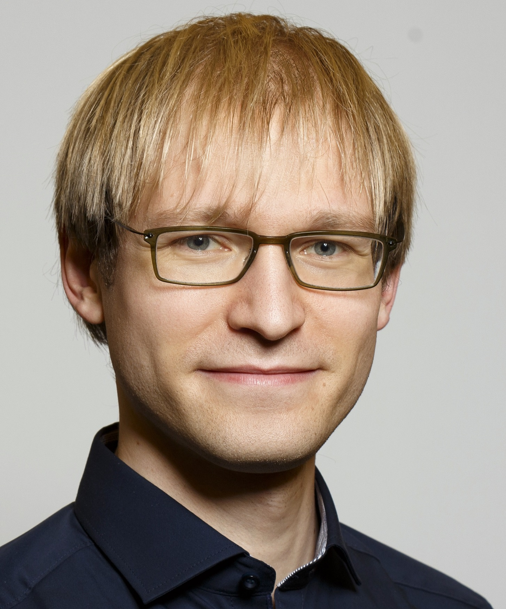
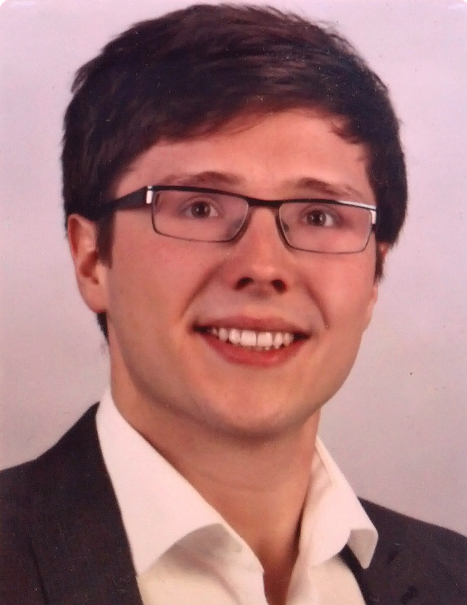
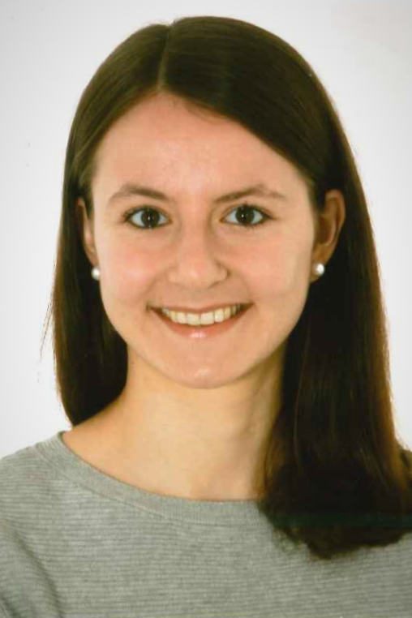
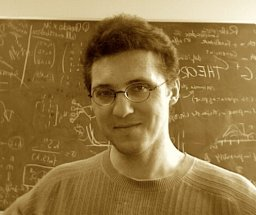

Jürgen Kurths is Senior Advisor at Research Department 4 “Complexity Science” at Potsdam Institute for Climate Impact Research (PIK) as well as Professor and Senior Advisor at Humboldt University Berlin. He is an expert in the fields of theoretical physics, complex systems science as well as applications to the Earth system, infrastructure (e.g. power grids), the human brain, and other systems which are characterized by a high degree of complexity and nonlinearity.

Frank Hellmann researches the dynamics of energy and electricity systems from a complex systems perspective. The main focus is on using probabilistic methods to understand and control high dimensional networked dynamical systems.
Philippe Jacquod is a Professor of theoretical physics with the Department of Quantum Matter Physics, University of Geneva, with a joint appointment with the HES-SO School of Engineering of Valais in Sion. Formerly a condensed-matter physicist with expertise in superconductivity and quantum coherent electronic transport, he is currently interested in dynamical phenomena occurring in electric power systems and other complex networked dynamical systems. When not playing with mathematical formulae, he keeps himself busy climbing up alpine peaks or skiing them down.

Moritz Thümler has been educated as a Lab Technician trained in Germany and South Korea, has studied Physics at TU Darmstadt. He currently is a Research Fellow at the Chair for Network Dynamics at TU Dresden as well as an independent IT consultant with applications ranging from satellite earth observation to the financial industry. Moritz is interested in understanding collective nonlinear dynamics of networked systems with a focus on exact mathematical analyses and applications in the field of power grid dynamics and oscillator networks. He enjoys cycling, mountain -hiking, reading and playing all sorts of board-games.

Simona Olmi has been a researcher at Istituto dei Sistemi Complessi-CNR since 2019. Her research activity ranges from Statistical Physics and Nonlinear Dynamics to Computational Neuroscience and Complex Networks; her activity has definitely an interdisciplinary approach, since she applies techniques and methods borrowed from statistical physics and nonlinear dynamics to characterize biological systems, mainly to neuroscience, but also with application to biomolecules. Her scientific expertise also includes power grids, stability analysis of collective solutions, epileptic seizure prediction.

Bálint Hartmann is a senior research fellow at the Centre for Energy Research in Hungary, and head of the research group ‘E-SEE (Energy Strategy and Environmental Effects)’. Most recently, his interest was in the topological properties, the evolutionary processes of transmission and distribution networks, and how the previous affect the vulnerability of the system. Together with Géza Ódor, he developed synchronisation simulations based on the second order Kuramoto model to examine phase synchronisation transition of regular networks, real-world and synthetic power grid topologies, focusing on the effect of various heterogeneities.

Benjamin Schäfer is leading a Young Investigator Group (funded with 1.5M€ for 5 years) at Karlsruhe Institute of Technology, Germany. He is a theoretical scientist analyzing various complex systems with an emphasis on the energy transition, sustainability and climate change. His research emphasizes decentralized bottom-up approaches, e.g. to control power grids. Method-wise, he combines data analysis, stochastic modelling and machine learning to understand complex systems. In his research he stresses the need for transparency and openness, e.g. via open data bases and the usage of interpretable (white-box) machine learning models.

Rico Berner is a Post-Doctoral Researcher at Humboldt Universität zu Berlin. He is an expert in the field of complex adaptive dynamical networks. His research is focused on the computational and mathematical analysis of nonlinear dynamical systems, synchronization phenomena in complex networks and the modeling of biological and technological systems.

Verena Häberle is a Ph.D. student with the Automatic Control Laboratory at ETH Zurich, Switzerland, since 2020. She received the B.Sc. and M.Sc. degree in electrical engineering and information technology from ETH Zurich, in 2018 and 2020, respectively. For her outstanding academic achievements during her Master's thesis at the Automatic Control Laboratory, ETH Zurich, under Professor Florian Dörfler, she was honored with the ETH Medal and the SGA Award from the Swiss Society of Automatic Control (SSAC). Her research focuses on the control design of dynamic virtual power plants for future power systems.

Adilson E. Motter is a Chaired Professor of Physics at Northwestern University. Prior to joining the Northwestern faculty, he held positions as Director’s Postdoctoral Fellow at the Center for Nonlinear Studies of LANL and as Guest Scientist at the Max Planck Institute for the Physics of Complex Systems. His research is focused on the dynamics of complex systems and networks, including synchronization phenomena, cascading failures, network control, and symmetry phenomena. He is particularly interested in the realistic modeling and control of complex physical, biological, and engineering systems, and in applications to renewable energy and smart power grids.